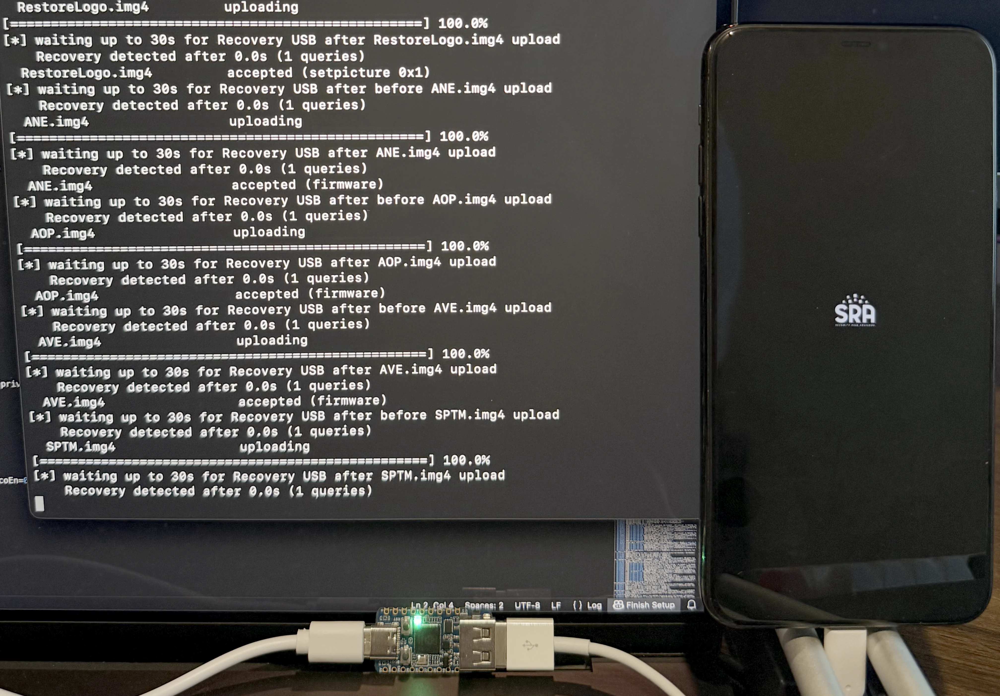
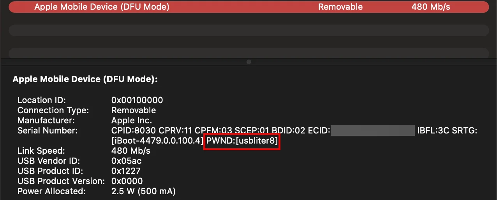
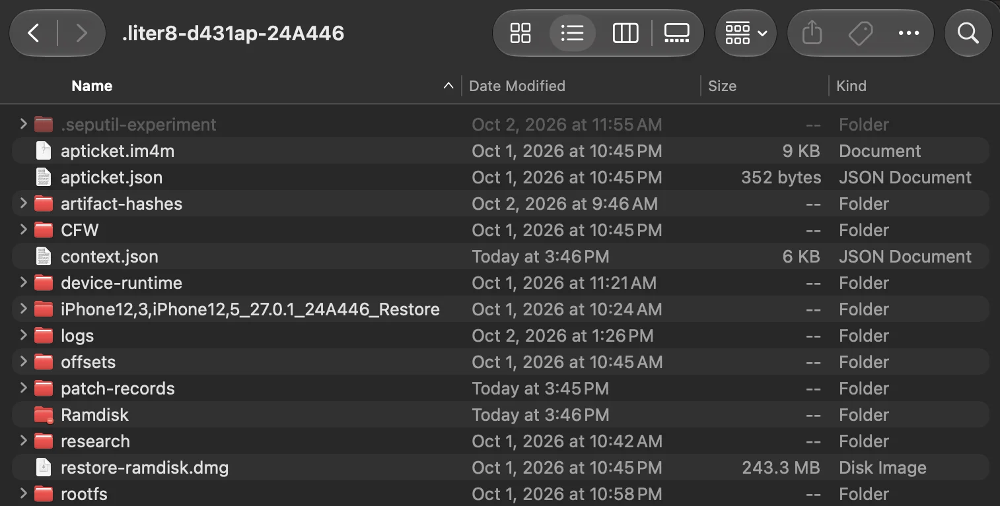
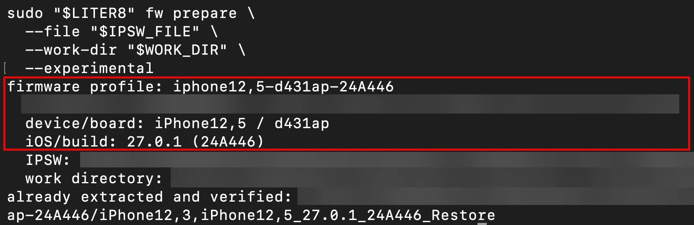
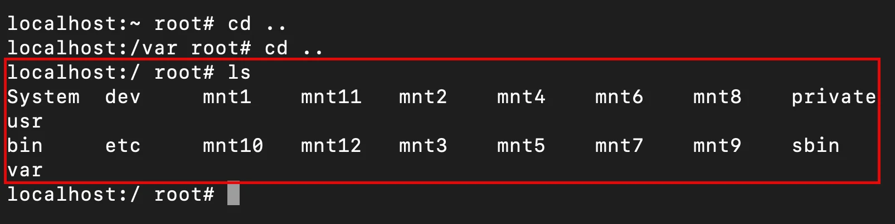
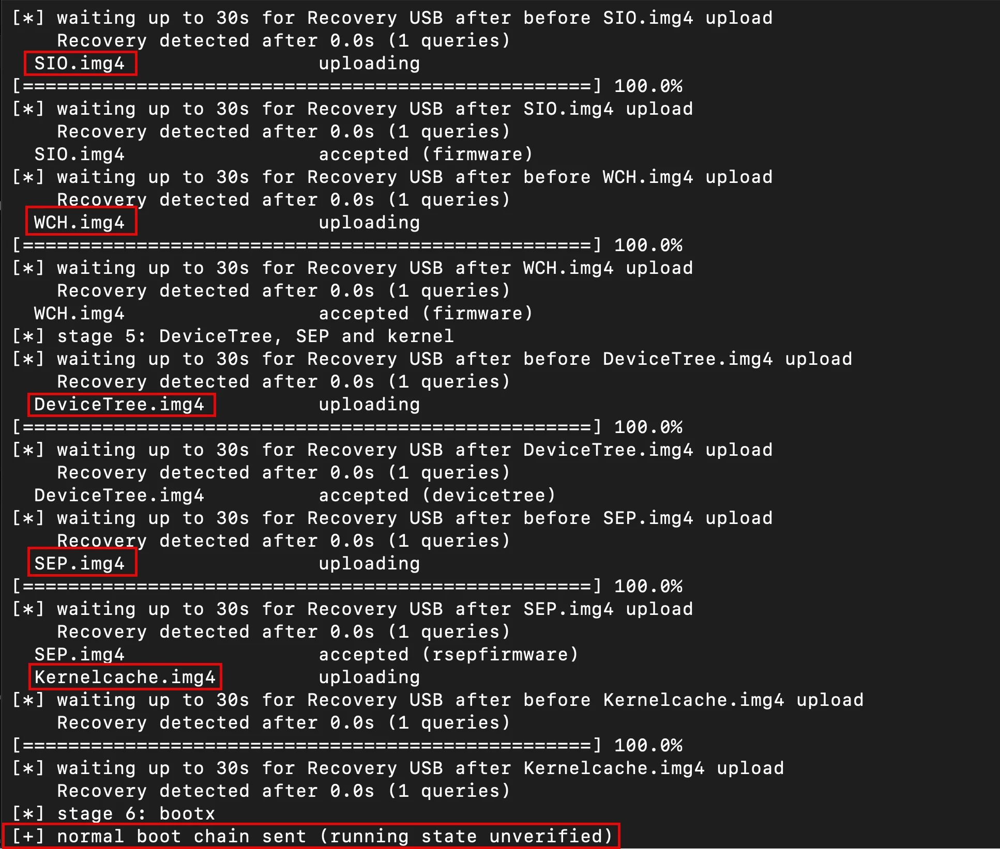
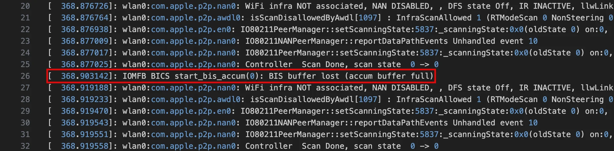
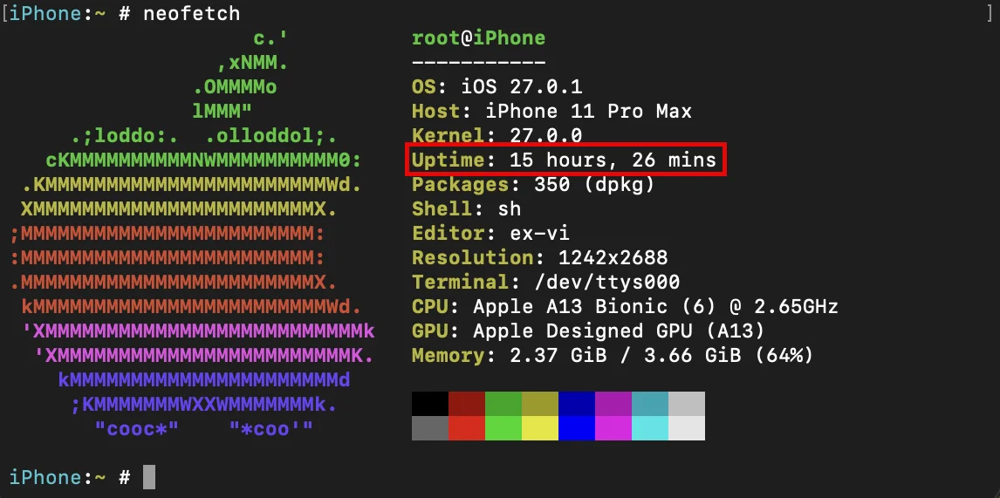
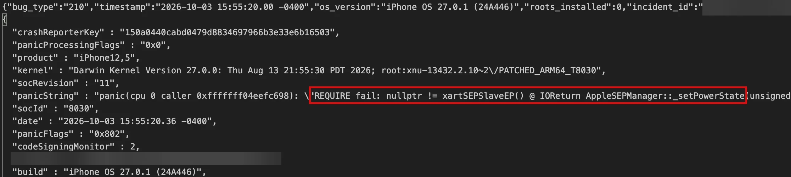

Jailbreaking the iPhone 11 Pro Max on iOS 27: Chasing Root and Stability with usbliter8

Summary⌗
Recently, SRA successfully jailbroke an iPhone 11 Pro Max using usbliter8 and Liter8 to turn the device into a mobile application security research platform. We reached normal boot with extended uptime, obtained root access, and installed research tools. Getting the device to stay running, however, required more investigation than gaining root access.
This post covers our testing, the SEP-dependent failures we identified, and changes we made to improve stability. These results are specific to our tested iPhone 11 Pro Max and firmware was not validated across every iPhone 11 model.
Introduction⌗
For mobile application testing, root access gives us visibility that a stock device restricts. Our goal was creating a physical research device capable of running Frida, application decryption tools, and HTTPS interception through Burp Suite.
We started with Liter8’s custom-firmware workflow for iPhone12,5, board d431ap, initially on iOS 27.0 build 24A437, then iOS 27.0.1 build 24A446. Credit goes to Xplo8E for Liter8. His code and documentation gave us a great start.
The Exploit and the SEP Catch⌗

The usbliter8 BootROM vulnerability uses an RP2350 board to exploit a USB-controller flaw, causing writes outside the intended memory buffer and gaining code execution in the BootROM environment. The PWND marker in the DFU USB serial string indicates the exploited state. Liter8 builds on this foothold to load a patched boot chain and custom iOS environment.
This is a tethered jailbreak: the exploit must be repeated after a restart as it does not compromise the Secure Enclave Processor (SEP). When the device attempts to boot by itself, it goes through it’s normal booting processes and attempts enabling the SEP. The SEP then detects the unsigned firmware stored on the device and the boot fails. This pushes the device to recovery mode. Our boot configuration keeps SEP disabled, leaving its security functions unavailable. Root access alone does not decrypt SEP-protected data. Importantly, iOS still contains processes that expect SEP to respond like pinging the modem, FaceID module, and passcode unlock — something we would spend considerable time troubleshooting.
From Custom Firmware to Root Access⌗

First, we extracted the IPSW (Apple’s software package to install firmware onto their family of devices) and verified the device/build profile. The archive contains operating-system disk images, bootloaders, kernelcache, and firmware. Selecting the correct components matters because multiple devices can share an IPSW, including the 11 Pro and Pro Max.

We then used patch resolvers to locate and modify boot-critical components. These changes address boot-policy enforcement, restore behavior, and restrictions that prevent the modified environment from running. The artifacts are packaged into Apple’s expected formats, including IM4P and personalized IMG4 containers, and verified before use.
With the phone in exploited DFU, we performed an erase restore using the modified restore boot chain. This removed existing data and gave us a fresh troubleshooting baseline.

After restoring, we returned to exploited DFU and booted SSHRD, a recovery environment with SSH access independent of installed iOS. We mounted System at /mnt1 and Data at /mnt2 to inspect files and make changes.
We installed Procursus at /var/jb to supply Unix tools, shells, libraries, and package-management utilities. Provisioning prepared Sileo, launchd-related injection payloads, and setup/activation changes needed to reach the home screen. Dropbear provided root SSH after normal boot. SSHRD remained our recovery route whenever iOS became unstable.

Then, booting. We generated normal-boot artifacts: patched bootloaders, DeviceTree, kernelcache, and firmware components. After checking the manifest and patch records, we used fw boot to send the chain.

We then ran finalization over Dropbear to complete bootstrap configuration, shell profiles, and System application registration. A successful check confirmed configuration—not stability through extended use, sleep/wake, or unplugged operation.
Root Access Stability⌗

Early runs froze or rebooted after approximately six minutes. Some looked like shutdowns; others left the screen on but unresponsive. Hard lockups often left no useful logs, sending us down a troubleshooting rabbit hole.
We collected repeated dmesg snapshots over SSH and recovered panic reports through SSHRD. Several messages were distractions: a Jetsam event showed intents_helper exceeding its per-process limit, not the kernel being killed.
Following the Failure Back to SEP⌗

One panic showed an IOKit termination backlog blocked behind AppleSEPKeyStore’s lookup of sep-endpoint,sks. Disassembly revealed an effectively unbounded wait for an unavailable endpoint. We bypassed that lookup using its existing null result cleanup path rather than pretending SEP was available.
Another panic identified seputil inside AppleSEPUserClient::DispatchHiloUpdateTimer. We disabled only com.apple.SepUpdateTimer in the active launchd service cache. Together, these changes produced a run exceeding 15 hours without issues. We incorporated the SKS bypass into this device/build’s regular boot workflow and omitted the timer during provisioning. Later failures showed we still couldn’t call it fully stable.
Power-State Changes, More Panics⌗

We later observed crashes after disconnecting external power. Panic reports pointed to AppleSEPManager::_setPowerState asserting that an XART SEP endpoint was missing. Our working explanation was a power-state transition reaching an unavailable SEP-dependent path.
We developed an experimental kernel guard that redirects the null-endpoint branch to an existing completion path. This avoids the assertion but does not restore SEP functionality or prove power-state handling is safe.
Research Tools: Progress and Limits⌗

Frida process enumeration worked, but injection remained unreliable. Diagnostics showed a protection request returning success while the bootstrap page remained non-executable. Code-signing and debug authorization remain under investigation.
Conclusion⌗
Successfully jailbreaking the iPhone 11 Pro Max was only part of the challenge. While usbliter8 and Liter8 gave us root access, keeping the device stable required investigating kernel panics and understanding which parts of iOS still depended on the now-disabled SEP.
By collecting logs, tracing failures, and making targeted changes, we improved uptime from approximately six minutes to over 15 hours. However, there is still work to be done when it comes to Frida hooking and tweak injection, as well as ensuring the device remains stable across different scenarios and power states.
Our progress gives us a stronger foundation for mobile application security research. We plan to continue improving stability and resolving the remaining issues to help make this jailbreak more reliable and accessible to the wider security research community.